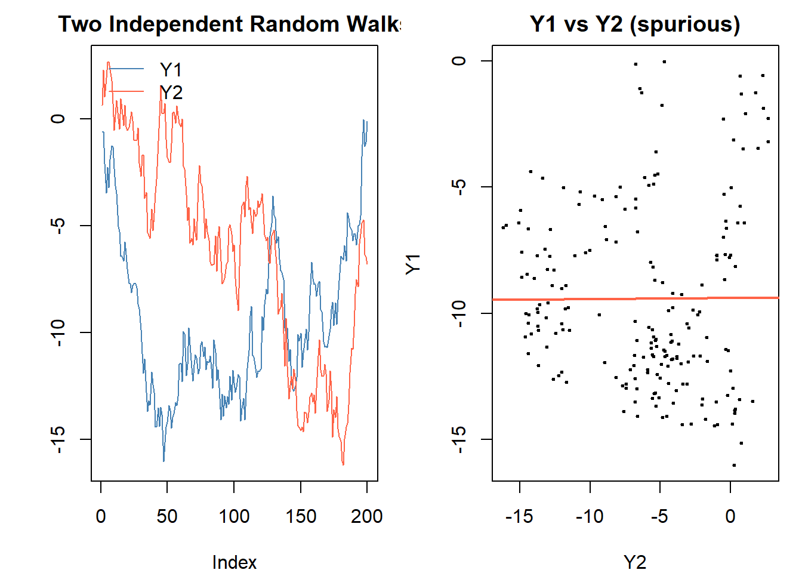
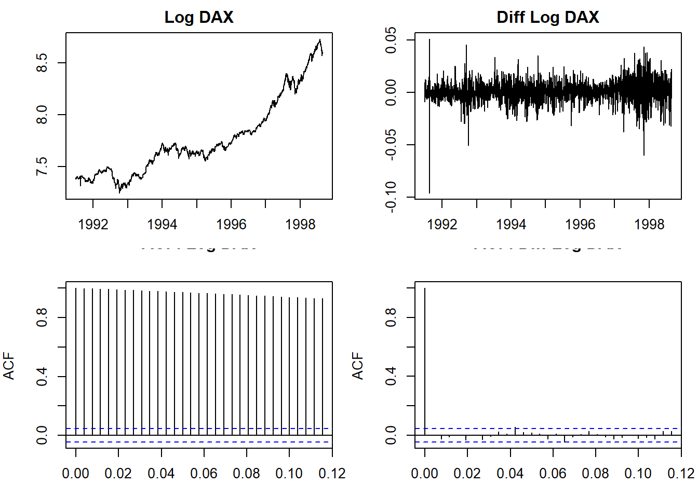
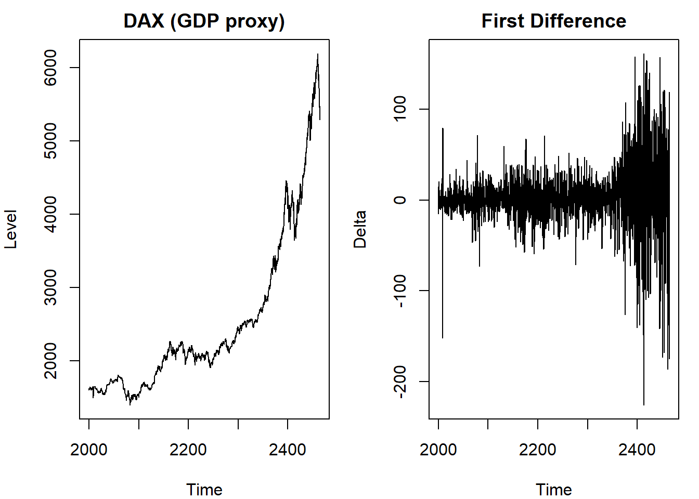

library(urca) # ur.df(): Dickey-Fuller with drift/trend variants and AIC lag selection
library(tseries) # adf.test(): quick ADF screening, po.test(): Phillips-Ouliaris cointegration
library(lmtest) # coeftest(): robust inference for time series regressions
library(quantmod) # getSymbols(): download financial price series (Gold, Silver, etc.)
library(dynlm) # dynlm(): dynamic linear models with lag operators for ECM estimationRegression with Time Series
Spurious regression, unit roots, ADF test, and cointegration
Regression and Stationarity
Conventional OLS asymptotics require stationary regressors. When variables are non-stationary (integrated), standard inference breaks down and results can be spurious.
Spurious regression (Yule 1926; Granger and Newbold 1974): regressing one \(I(1)\) series on another unrelated \(I(1)\) series produces a seemingly significant relationship (high \(R^2\), significant t-stats) even though the two series are completely unrelated.
Unbalanced regressions: the regressand \(Y_t\) and regressors \(X_t\) should be of the same order of integration. Mixing \(I(0)\) and \(I(1)\) variables gives “odd” results.
set.seed(11)
n <- 200
y1 <- cumsum(rnorm(n)) # independent I(1)
y2 <- cumsum(rnorm(n)) # independent I(1)
mod_spur <- lm(y1 ~ y2)
summary(mod_spur) # expect significant t-stat despite no relationship
Call:
lm(formula = y1 ~ y2)
Residuals:
Min 1Q Median 3Q Max
-6.641 -2.665 -0.924 2.459 9.377
Coefficients:
Estimate Std. Error t value Pr(>|t|)
(Intercept) -9.382108 0.404043 -23.221 <2e-16 ***
y2 0.004691 0.051476 0.091 0.927
---
Signif. codes: 0 '***' 0.001 '**' 0.01 '*' 0.05 '.' 0.1 ' ' 1
Residual standard error: 3.621 on 198 degrees of freedom
Multiple R-squared: 4.194e-05, Adjusted R-squared: -0.005008
F-statistic: 0.008305 on 1 and 198 DF, p-value: 0.9275
Stationarity and Order of Integration
A series is integrated of order \(d\), \(X_t \sim I(d)\), if it becomes stationary after differencing \(d\) times.
- \(I(0)\): stationary, mean-reverting, limited memory, transitory shocks, ACF decays fast
- \(I(1)\): random walk-like; wanders widely, infinite memory, permanent shocks, ACF decays slowly
For an AR(1): \(Y_t = \rho Y_{t-1} + Z_t\): - \(|\rho| < 1\): stationary, \(I(0)\) - \(\rho = 1\): unit root, \(I(1)\), variance grows with \(t\) - \(\rho > 1\): explosive, not economically meaningful
Dickey-Fuller Test
To test formally for a unit root, start with the AR(1):
\[Y_t = \rho Y_{t-1} + Z_t\]
Subtract \(Y_{t-1}\) from both sides: \(\Delta Y_t = \alpha Y_{t-1} + Z_t\) where \(\alpha = \rho - 1\).
Hypotheses: - \(H_0\): \(\alpha = 0\) (\(\rho = 1\), unit root, non-stationary) - \(H_1\): \(\alpha < 0\) (\(\rho < 1\), stationary)
Problem: under \(H_0\), \(Y_t\) is non-stationary, so the OLS t-statistic does not follow a standard t-distribution. The t-statistic on \(\hat{\alpha}\) converges to a functional of a standard Brownian motion, not to \(N(0,1)\). This limiting distribution is called the Dickey-Fuller distribution. Its critical values are more negative than for a standard t-test: you need a more extreme (more negative) test statistic to reject \(H_0\). The critical values are obtained from Monte Carlo simulation and printed directly in the ur.df() output. Never compare the test statistic to \(\pm 1.96\).
The re-parametrization \(\alpha = \rho - 1\) makes the hypotheses natural: \(H_0: \alpha = 0\) (\(\rho = 1\), unit root) versus \(H_1: \alpha < 0\) (\(\rho < 1\), stationary, mean-reverting). The test is one-sided: we only care whether the process is explosive-free and stationary, not whether it is explosive.
Three variants depending on the deterministic terms included:
| Variant | Regression |
|---|---|
| No drift, no trend | \(\Delta Y_t = \alpha Y_{t-1} + Z_t\) |
| With drift | \(\Delta Y_t = \beta_0 + \alpha Y_{t-1} + Z_t\) |
| With drift + trend | \(\Delta Y_t = \beta_0 + \beta_1 t + \alpha Y_{t-1} + Z_t\) |
Including drift and/or trend changes the critical values.
In R, urca::ur.df(y, type, lags) implements all three variants. The type argument is 'none' (no drift, no trend), 'drift' (with drift), or 'trend' (with drift and trend). The test statistic is labeled tau, tau2, or tau3 in the output depending on the variant.
set.seed(12)
y_rw <- cumsum(rnorm(100)) # true I(1)
y_ar <- arima.sim(model = list(ar = 0.7), n = 100) # true I(0)
# DF test (no lags) on the random walk
adf_rw <- ur.df(y_rw, type = "none", lags = 0)
summary(adf_rw)
###############################################
# Augmented Dickey-Fuller Test Unit Root Test #
###############################################
Test regression none
Call:
lm(formula = z.diff ~ z.lag.1 - 1)
Residuals:
Min 1Q Median 3Q Max
-2.1455 -0.5838 -0.1857 0.4421 2.0108
Coefficients:
Estimate Std. Error t value Pr(>|t|)
z.lag.1 -0.01586 0.01895 -0.837 0.404
Residual standard error: 0.8541 on 98 degrees of freedom
Multiple R-squared: 0.007103, Adjusted R-squared: -0.003029
F-statistic: 0.7011 on 1 and 98 DF, p-value: 0.4045
Value of test-statistic is: -0.8373
Critical values for test statistics:
1pct 5pct 10pct
tau1 -2.6 -1.95 -1.61# on the stationary series
adf_ar <- ur.df(y_ar, type = "none", lags = 0)
summary(adf_ar)
###############################################
# Augmented Dickey-Fuller Test Unit Root Test #
###############################################
Test regression none
Call:
lm(formula = z.diff ~ z.lag.1 - 1)
Residuals:
Min 1Q Median 3Q Max
-3.00833 -0.72733 0.03044 0.77760 2.13005
Coefficients:
Estimate Std. Error t value Pr(>|t|)
z.lag.1 -0.32336 0.07533 -4.293 4.15e-05 ***
---
Signif. codes: 0 '***' 0.001 '**' 0.01 '*' 0.05 '.' 0.1 ' ' 1
Residual standard error: 1.043 on 98 degrees of freedom
Multiple R-squared: 0.1583, Adjusted R-squared: 0.1497
F-statistic: 18.43 on 1 and 98 DF, p-value: 4.151e-05
Value of test-statistic is: -4.2928
Critical values for test statistics:
1pct 5pct 10pct
tau1 -2.6 -1.95 -1.61Augmented Dickey-Fuller (ADF) Test
The basic DF test assumes iid errors. In practice, residuals are often serially correlated (common in economic data). Augmented DF adds lagged differences to absorb serial correlation:
Without drift: \(\Delta Y_t = \alpha Y_{t-1} + \sum_{i=1}^{p-1} \gamma_i \Delta Y_{t-i} + Z_t\)
With drift: \(\Delta Y_t = \beta_0 + \alpha Y_{t-1} + \sum_{i=1}^{p-1} \gamma_i \Delta Y_{t-i} + Z_t\)
With drift + trend: \(\Delta Y_t = \beta_0 + \beta_1 t + \alpha Y_{t-1} + \sum_{i=1}^{p-1} \gamma_i \Delta Y_{t-i} + Z_t\)
The lag augmentation serves a specific purpose: it removes serial correlation from the residuals \(Z_t\). Without this, the error term in the regression is autocorrelated, which invalidates the asymptotic distribution of the test statistic. By including enough lags of \(\Delta Y_t\), the residuals become approximately white noise and the Dickey-Fuller limiting distribution applies. The coefficients \(\gamma_i\) on the augmenting lags are nuisance parameters: they are not interpreted and not tested.
Lag length selection: pass selectlags = 'AIC' or selectlags = 'BIC' to urca::ur.df() for automatic selection. The critical values at 1%, 5%, and 10% are printed in the ur.df summary output under Critical values; compare the test statistic to these, not to standard normal values.
The lag length \(p-1\) is selected by AIC/BIC. The test statistic and its distribution are the same as DF; only the t-stat on \(\alpha\) is used.
Properties of ADF: - Poor power against near-unit-root alternatives (tends to fail to reject when \(\rho\) is close but not equal to 1) - Relatively little size distortion - Lag selection by AIC recommended (“likely to be the most useful in practice”, De Jong et al., 1992)
# ADF with automatic lag selection (AIC)
adf_rw_aic <- ur.df(y_rw, type = "drift", selectlags = "AIC")
summary(adf_rw_aic)
###############################################
# Augmented Dickey-Fuller Test Unit Root Test #
###############################################
Test regression drift
Call:
lm(formula = z.diff ~ z.lag.1 + 1 + z.diff.lag)
Residuals:
Min 1Q Median 3Q Max
-1.77896 -0.47672 -0.03003 0.47359 2.17508
Coefficients:
Estimate Std. Error t value Pr(>|t|)
(Intercept) -0.40992 0.17761 -2.308 0.0232 *
z.lag.1 -0.09440 0.03920 -2.408 0.0180 *
z.diff.lag 0.03174 0.10027 0.317 0.7523
---
Signif. codes: 0 '***' 0.001 '**' 0.01 '*' 0.05 '.' 0.1 ' ' 1
Residual standard error: 0.8297 on 95 degrees of freedom
Multiple R-squared: 0.0577, Adjusted R-squared: 0.03786
F-statistic: 2.909 on 2 and 95 DF, p-value: 0.05943
Value of test-statistic is: -2.4079 2.976
Critical values for test statistics:
1pct 5pct 10pct
tau2 -3.51 -2.89 -2.58
phi1 6.70 4.71 3.86adf_ar_aic <- ur.df(y_ar, type = "drift", selectlags = "AIC")
summary(adf_ar_aic)
###############################################
# Augmented Dickey-Fuller Test Unit Root Test #
###############################################
Test regression drift
Call:
lm(formula = z.diff ~ z.lag.1 + 1 + z.diff.lag)
Residuals:
Min 1Q Median 3Q Max
-3.00053 -0.70188 0.01567 0.76980 2.14892
Coefficients:
Estimate Std. Error t value Pr(>|t|)
(Intercept) -0.02851 0.10673 -0.267 0.789976
z.lag.1 -0.30791 0.08344 -3.690 0.000373 ***
z.diff.lag -0.04188 0.10292 -0.407 0.685009
---
Signif. codes: 0 '***' 0.001 '**' 0.01 '*' 0.05 '.' 0.1 ' ' 1
Residual standard error: 1.051 on 95 degrees of freedom
Multiple R-squared: 0.1589, Adjusted R-squared: 0.1412
F-statistic: 8.977 on 2 and 95 DF, p-value: 0.0002686
Value of test-statistic is: -3.6903 6.8152
Critical values for test statistics:
1pct 5pct 10pct
tau2 -3.51 -2.89 -2.58
phi1 6.70 4.71 3.86Practical Workflow
- Plot the series. Does it wander or mean-revert?
- Plot the ACF. Slow decay suggests \(I(1)\).
- Apply ADF with drift (or drift + trend if visual trend is present), using AIC lag selection
- If fail to reject: series is \(I(1)\). Difference and re-test.
- If reject: series is \(I(0)\), proceed with ARMA modeling
# Spain GDP example from lecture: check levels vs differences
data("EuStockMarkets")
dax <- EuStockMarkets[, "DAX"]
ldax <- log(dax)
par(mfrow = c(2, 2), mar = c(3, 4, 2, 1))
plot(ldax, type = "l", main = "Log DAX", ylab = "")
plot(diff(ldax), type = "l", main = "Diff Log DAX", ylab = "")
acf(ldax, main = "ACF: Log DAX", lag.max = 30)
acf(diff(ldax), main = "ACF: Diff Log DAX", lag.max = 30)
# ADF on log DAX (levels)
summary(ur.df(ldax, type = "drift", selectlags = "AIC"))
###############################################
# Augmented Dickey-Fuller Test Unit Root Test #
###############################################
Test regression drift
Call:
lm(formula = z.diff ~ z.lag.1 + 1 + z.diff.lag)
Residuals:
Min 1Q Median 3Q Max
-0.096666 -0.005209 -0.000143 0.005711 0.050462
Coefficients:
Estimate Std. Error t value Pr(>|t|)
(Intercept) -0.0053042 0.0051280 -1.034 0.301
z.lag.1 0.0007681 0.0006600 1.164 0.245
z.diff.lag -0.0018795 0.0232636 -0.081 0.936
Residual standard error: 0.0103 on 1855 degrees of freedom
Multiple R-squared: 0.0007299, Adjusted R-squared: -0.0003475
F-statistic: 0.6775 on 2 and 1855 DF, p-value: 0.508
Value of test-statistic is: 1.1639 4.4484
Critical values for test statistics:
1pct 5pct 10pct
tau2 -3.43 -2.86 -2.57
phi1 6.43 4.59 3.78# ADF on first differences
summary(ur.df(diff(ldax), type = "drift", selectlags = "AIC"))
###############################################
# Augmented Dickey-Fuller Test Unit Root Test #
###############################################
Test regression drift
Call:
lm(formula = z.diff ~ z.lag.1 + 1 + z.diff.lag)
Residuals:
Min 1Q Median 3Q Max
-0.096889 -0.005245 -0.000188 0.005728 0.047513
Coefficients:
Estimate Std. Error t value Pr(>|t|)
(Intercept) 0.0006779 0.0002401 2.824 0.0048 **
z.lag.1 -1.0274812 0.0328612 -31.267 <2e-16 ***
z.diff.lag 0.0267957 0.0232380 1.153 0.2490
---
Signif. codes: 0 '***' 0.001 '**' 0.01 '*' 0.05 '.' 0.1 ' ' 1
Residual standard error: 0.0103 on 1854 degrees of freedom
Multiple R-squared: 0.5002, Adjusted R-squared: 0.4996
F-statistic: 927.6 on 2 and 1854 DF, p-value: < 2.2e-16
Value of test-statistic is: -31.2673 488.823
Critical values for test statistics:
1pct 5pct 10pct
tau2 -3.43 -2.86 -2.57
phi1 6.43 4.59 3.78Real-Data Example: Spain GDP
The ADF example uses quarterly Spanish GDP (in thousands of millions of euros, 2000–present). The series has a clear upward trend, so the trend variant of the DF test is appropriate.
# use EuStockMarkets DAX as a stand-in for GDP-like trending series
data("EuStockMarkets")
gdp_proxy <- window(ts(EuStockMarkets[, "DAX"], start = c(2000, 1), frequency = 4))
par(mfrow = c(1, 2), mar = c(4, 4, 2, 1))
plot(gdp_proxy, main = "DAX (GDP proxy)", ylab = "Level")
plot(diff(gdp_proxy), main = "First Difference", ylab = "Delta")
par(mfrow = c(1, 1))Step 1: ADF on levels. Test all three variants (none, drift, trend) – the trend variant is most appropriate given the visual upward drift:
# none: no deterministic terms
summary(ur.df(gdp_proxy, lag = 0, type = "none"))
###############################################
# Augmented Dickey-Fuller Test Unit Root Test #
###############################################
Test regression none
Call:
lm(formula = z.diff ~ z.lag.1 - 1)
Residuals:
Min 1Q Median 3Q Max
-229.186 -12.084 -0.983 12.025 157.687
Coefficients:
Estimate Std. Error t value Pr(>|t|)
z.lag.1 0.0009005 0.0002737 3.29 0.00102 **
---
Signif. codes: 0 '***' 0.001 '**' 0.01 '*' 0.05 '.' 0.1 ' ' 1
Residual standard error: 32.47 on 1858 degrees of freedom
Multiple R-squared: 0.005791, Adjusted R-squared: 0.005256
F-statistic: 10.82 on 1 and 1858 DF, p-value: 0.001022
Value of test-statistic is: 3.2897
Critical values for test statistics:
1pct 5pct 10pct
tau1 -2.58 -1.95 -1.62# drift: intercept only
summary(ur.df(gdp_proxy, lag = 0, type = "drift"))
###############################################
# Augmented Dickey-Fuller Test Unit Root Test #
###############################################
Test regression drift
Call:
lm(formula = z.diff ~ z.lag.1 + 1)
Residuals:
Min 1Q Median 3Q Max
-229.583 -11.704 -0.594 12.498 157.392
Coefficients:
Estimate Std. Error t value Pr(>|t|)
(Intercept) -1.3500325 1.9138067 -0.705 0.4806
z.lag.1 0.0013516 0.0006957 1.943 0.0522 .
---
Signif. codes: 0 '***' 0.001 '**' 0.01 '*' 0.05 '.' 0.1 ' ' 1
Residual standard error: 32.47 on 1857 degrees of freedom
Multiple R-squared: 0.002029, Adjusted R-squared: 0.001491
F-statistic: 3.775 on 1 and 1857 DF, p-value: 0.05218
Value of test-statistic is: 1.9429 5.6582
Critical values for test statistics:
1pct 5pct 10pct
tau2 -3.43 -2.86 -2.57
phi1 6.43 4.59 3.78# trend: intercept + time trend
summary(ur.df(gdp_proxy, lag = 0, type = "trend"))
###############################################
# Augmented Dickey-Fuller Test Unit Root Test #
###############################################
Test regression trend
Call:
lm(formula = z.diff ~ z.lag.1 + 1 + tt)
Residuals:
Min 1Q Median 3Q Max
-230.269 -11.648 -0.053 12.132 156.267
Coefficients:
Estimate Std. Error t value Pr(>|t|)
(Intercept) -0.7004930 1.9519857 -0.359 0.7197
z.lag.1 -0.0005729 0.0013454 -0.426 0.6703
tt 0.0045352 0.0027143 1.671 0.0949 .
---
Signif. codes: 0 '***' 0.001 '**' 0.01 '*' 0.05 '.' 0.1 ' ' 1
Residual standard error: 32.46 on 1856 degrees of freedom
Multiple R-squared: 0.003528, Adjusted R-squared: 0.002454
F-statistic: 3.285 on 2 and 1856 DF, p-value: 0.03765
Value of test-statistic is: -0.4258 4.7064 3.2852
Critical values for test statistics:
1pct 5pct 10pct
tau3 -3.96 -3.41 -3.12
phi2 6.09 4.68 4.03
phi3 8.27 6.25 5.34Step 2: ADF on first differences. After differencing, the trend disappears; use the drift variant:
d_gdp <- diff(gdp_proxy)
summary(ur.df(d_gdp, selectlags = "AIC", type = "drift"))
###############################################
# Augmented Dickey-Fuller Test Unit Root Test #
###############################################
Test regression drift
Call:
lm(formula = z.diff ~ z.lag.1 + 1 + z.diff.lag)
Residuals:
Min 1Q Median 3Q Max
-227.657 -12.045 -1.038 12.057 157.621
Coefficients:
Estimate Std. Error t value Pr(>|t|)
(Intercept) 2.10700 0.75772 2.781 0.00548 **
z.lag.1 -1.01210 0.03291 -30.752 < 2e-16 ***
z.diff.lag 0.01288 0.02331 0.552 0.58074
---
Signif. codes: 0 '***' 0.001 '**' 0.01 '*' 0.05 '.' 0.1 ' ' 1
Residual standard error: 32.53 on 1854 degrees of freedom
Multiple R-squared: 0.498, Adjusted R-squared: 0.4974
F-statistic: 919.6 on 2 and 1854 DF, p-value: < 2.2e-16
Value of test-statistic is: -30.7516 472.8345
Critical values for test statistics:
1pct 5pct 10pct
tau2 -3.43 -2.86 -2.57
phi1 6.43 4.59 3.78If the level tests fail to reject and the difference test rejects, the series is confirmed \(I(1)\).
Reading ur.df output: the test statistic is in the row labeled z.lag.1 (the coefficient on \(Y_{t-1}\)). Compare it to the critical values in the Critical values block. Rejection requires the test statistic to be more negative than the critical value.
Cointegration
Two \(I(1)\) series \(Y_t\) and \(X_t\) are cointegrated if there exists \(\beta\) such that \(Y_t - \beta X_t \sim I(0)\). The linear combination \(u_t = Y_t - \beta X_t\) is stationary even though \(Y_t\) and \(X_t\) individually are not.
Cointegration implies a long-run equilibrium relationship. Deviations from it are transitory and the series are pulled back together over time.
Error Correction Model (ECM): if \(Y_t\) and \(X_t\) are cointegrated, they have an ECM representation:
\[\Delta Y_t = \lambda(Y_{t-1} - \beta X_{t-1}) + \text{lags} + \epsilon_t\]
where \(\lambda < 0\) is the speed of adjustment toward the long-run equilibrium \(Y_t = \beta X_t\).
In R, the Engle-Granger two-step procedure is: (1) regress \(Y_t\) on \(X_t\) with lm() and save residuals; (2) run urca::ur.df(resid, type = 'none', selectlags = 'AIC') on the residuals. Rejection of the unit root in the residuals confirms cointegration. Note: use the Engle-Granger critical values (not standard DF critical values) since the residuals are estimated.
# Engle-Granger two-step: regress Y on X, test residuals for I(0)
set.seed(13)
x_ci <- cumsum(rnorm(200))
y_ci <- 0.8 * x_ci + rnorm(200) # cointegrated: Y = 0.8X + stationary noise
# step 1: OLS
eg_mod <- lm(y_ci ~ x_ci)
resid_eg <- residuals(eg_mod)
# step 2: ADF on residuals
summary(ur.df(resid_eg, type = "none", selectlags = "AIC"))
###############################################
# Augmented Dickey-Fuller Test Unit Root Test #
###############################################
Test regression none
Call:
lm(formula = z.diff ~ z.lag.1 - 1 + z.diff.lag)
Residuals:
Min 1Q Median 3Q Max
-2.58819 -0.69727 0.01761 0.69849 3.10167
Coefficients:
Estimate Std. Error t value Pr(>|t|)
z.lag.1 -1.072547 0.103876 -10.325 <2e-16 ***
z.diff.lag 0.004313 0.071135 0.061 0.952
---
Signif. codes: 0 '***' 0.001 '**' 0.01 '*' 0.05 '.' 0.1 ' ' 1
Residual standard error: 1.083 on 196 degrees of freedom
Multiple R-squared: 0.5344, Adjusted R-squared: 0.5296
F-statistic: 112.5 on 2 and 196 DF, p-value: < 2.2e-16
Value of test-statistic is: -10.3252
Critical values for test statistics:
1pct 5pct 10pct
tau1 -2.58 -1.95 -1.62If we reject the null of a unit root in the residuals, the series are cointegrated.
Real-Data Example: Gold and Silver
Gold and Silver prices are often cited as a textbook cointegration example. Both are \(I(1)\) in levels but their spread tends to be stationary, reflecting a long-run pricing relationship.
The workflow below uses quantmod::getSymbols() to fetch price data. Because live data downloads require internet access, the example uses a simulated cointegrated pair with the same statistical structure:
set.seed(13)
n <- 1500
# common stochastic trend (the I(1) component both series share)
common_trend <- cumsum(rnorm(n, sd = 1))
gold <- ts(100 + common_trend + rnorm(n, sd = 2), start = c(2012, 1), frequency = 252)
silver <- ts(20 + 0.5 * common_trend + rnorm(n, sd = 1), start = c(2012, 1), frequency = 252)Step 1: Confirm both series are I(1).
# gold levels: fail to reject
summary(ur.df(gold, type = "drift", selectlags = "AIC"))
###############################################
# Augmented Dickey-Fuller Test Unit Root Test #
###############################################
Test regression drift
Call:
lm(formula = z.diff ~ z.lag.1 + 1 + z.diff.lag)
Residuals:
Min 1Q Median 3Q Max
-10.0191 -1.7474 -0.0866 1.7352 8.2909
Coefficients:
Estimate Std. Error t value Pr(>|t|)
(Intercept) 3.987950 0.876762 4.548 5.84e-06 ***
z.lag.1 -0.039954 0.008763 -4.559 5.56e-06 ***
z.diff.lag -0.433126 0.023306 -18.584 < 2e-16 ***
---
Signif. codes: 0 '***' 0.001 '**' 0.01 '*' 0.05 '.' 0.1 ' ' 1
Residual standard error: 2.626 on 1495 degrees of freedom
Multiple R-squared: 0.2163, Adjusted R-squared: 0.2153
F-statistic: 206.3 on 2 and 1495 DF, p-value: < 2.2e-16
Value of test-statistic is: -4.5591 10.3936
Critical values for test statistics:
1pct 5pct 10pct
tau2 -3.43 -2.86 -2.57
phi1 6.43 4.59 3.78# gold differences: reject
summary(ur.df(diff(gold), type = "drift", selectlags = "AIC"))
###############################################
# Augmented Dickey-Fuller Test Unit Root Test #
###############################################
Test regression drift
Call:
lm(formula = z.diff ~ z.lag.1 + 1 + z.diff.lag)
Residuals:
Min 1Q Median 3Q Max
-9.994 -1.766 -0.102 1.760 8.263
Coefficients:
Estimate Std. Error t value Pr(>|t|)
(Intercept) 0.004962 0.066307 0.075 0.94
z.lag.1 -1.807267 0.042788 -42.238 <2e-16 ***
z.diff.lag 0.243799 0.025094 9.715 <2e-16 ***
---
Signif. codes: 0 '***' 0.001 '**' 0.01 '*' 0.05 '.' 0.1 ' ' 1
Residual standard error: 2.565 on 1494 degrees of freedom
Multiple R-squared: 0.7428, Adjusted R-squared: 0.7424
F-statistic: 2157 on 2 and 1494 DF, p-value: < 2.2e-16
Value of test-statistic is: -42.2378 892.0166
Critical values for test statistics:
1pct 5pct 10pct
tau2 -3.43 -2.86 -2.57
phi1 6.43 4.59 3.78summary(ur.df(silver, type = "drift", selectlags = "AIC"))
###############################################
# Augmented Dickey-Fuller Test Unit Root Test #
###############################################
Test regression drift
Call:
lm(formula = z.diff ~ z.lag.1 + 1 + z.diff.lag)
Residuals:
Min 1Q Median 3Q Max
-4.1497 -0.9183 -0.0110 0.9130 4.4520
Coefficients:
Estimate Std. Error t value Pr(>|t|)
(Intercept) 0.842409 0.182323 4.620 4.16e-06 ***
z.lag.1 -0.042277 0.009009 -4.693 2.94e-06 ***
z.diff.lag -0.425260 0.023405 -18.170 < 2e-16 ***
---
Signif. codes: 0 '***' 0.001 '**' 0.01 '*' 0.05 '.' 0.1 ' ' 1
Residual standard error: 1.349 on 1495 degrees of freedom
Multiple R-squared: 0.211, Adjusted R-squared: 0.21
F-statistic: 200 on 2 and 1495 DF, p-value: < 2.2e-16
Value of test-statistic is: -4.693 11.0148
Critical values for test statistics:
1pct 5pct 10pct
tau2 -3.43 -2.86 -2.57
phi1 6.43 4.59 3.78summary(ur.df(diff(silver), type = "drift", selectlags = "AIC"))
###############################################
# Augmented Dickey-Fuller Test Unit Root Test #
###############################################
Test regression drift
Call:
lm(formula = z.diff ~ z.lag.1 + 1 + z.diff.lag)
Residuals:
Min 1Q Median 3Q Max
-4.2674 -0.9100 -0.0298 0.9111 4.1234
Coefficients:
Estimate Std. Error t value Pr(>|t|)
(Intercept) 0.002535 0.033950 0.075 0.94
z.lag.1 -1.817711 0.042516 -42.753 <2e-16 ***
z.diff.lag 0.256885 0.024993 10.278 <2e-16 ***
---
Signif. codes: 0 '***' 0.001 '**' 0.01 '*' 0.05 '.' 0.1 ' ' 1
Residual standard error: 1.314 on 1494 degrees of freedom
Multiple R-squared: 0.7415, Adjusted R-squared: 0.7411
F-statistic: 2143 on 2 and 1494 DF, p-value: < 2.2e-16
Value of test-statistic is: -42.7534 913.9278
Critical values for test statistics:
1pct 5pct 10pct
tau2 -3.43 -2.86 -2.57
phi1 6.43 4.59 3.78Step 2: Engle-Granger regression. OLS of Gold on Silver gives the long-run coefficient \(\hat{\beta}\):
m_eg <- lm(gold ~ silver)
summary(m_eg)
Call:
lm(formula = gold ~ silver)
Residuals:
Min 1Q Median 3Q Max
-8.9746 -1.9480 -0.0734 1.8631 9.3771
Coefficients:
Estimate Std. Error t value Pr(>|t|)
(Intercept) 62.56756 0.36809 170 <2e-16 ***
silver 1.87143 0.01817 103 <2e-16 ***
---
Signif. codes: 0 '***' 0.001 '**' 0.01 '*' 0.05 '.' 0.1 ' ' 1
Residual standard error: 2.774 on 1498 degrees of freedom
Multiple R-squared: 0.8762, Adjusted R-squared: 0.8762
F-statistic: 1.061e+04 on 1 and 1498 DF, p-value: < 2.2e-16e_hat <- resid(m_eg)Step 3: ADF on residuals. If \(\hat{u}_t = Y_t - \hat{\beta} X_t\) is \(I(0)\), the series are cointegrated:
# use type = "none": residuals have zero mean by OLS construction
summary(ur.df(e_hat, type = "none", selectlags = "AIC"))
###############################################
# Augmented Dickey-Fuller Test Unit Root Test #
###############################################
Test regression none
Call:
lm(formula = z.diff ~ z.lag.1 - 1 + z.diff.lag)
Residuals:
Min 1Q Median 3Q Max
-8.9573 -1.9398 -0.0612 1.8682 9.3119
Coefficients:
Estimate Std. Error t value Pr(>|t|)
z.lag.1 -0.97111 0.03660 -26.530 <2e-16 ***
z.diff.lag -0.03159 0.02583 -1.223 0.221
---
Signif. codes: 0 '***' 0.001 '**' 0.01 '*' 0.05 '.' 0.1 ' ' 1
Residual standard error: 2.772 on 1496 degrees of freedom
Multiple R-squared: 0.5019, Adjusted R-squared: 0.5012
F-statistic: 753.6 on 2 and 1496 DF, p-value: < 2.2e-16
Value of test-statistic is: -26.5298
Critical values for test statistics:
1pct 5pct 10pct
tau1 -2.58 -1.95 -1.62Step 4: Error Correction Model. If cointegrated, estimate the ECM with lm(). The lagged residual e_hat[-n] is the error correction term; its coefficient \(\hat{\lambda}\) measures the speed of adjustment:
n_obs <- length(gold)
dg <- diff(gold)
ds <- diff(silver)
er <- e_hat[-n_obs] # error correction term (lagged one period)
# step selection via step()
ecm_full <- lm(dg ~ ds + lag(dg, -1) + lag(ds, -1) + er)
ecm <- step(ecm_full, trace = FALSE)
summary(ecm)
Call:
lm(formula = dg ~ ds + lag(dg, -1) + er)
Residuals:
Min 1Q Median 3Q Max
-5.549e-15 -3.220e-16 -1.380e-16 6.000e-17 2.012e-13
Coefficients:
Estimate Std. Error t value Pr(>|t|)
(Intercept) 4.605e-18 1.347e-16 3.400e-02 0.972736
ds 3.629e-16 1.088e-16 3.334e+00 0.000877 ***
lag(dg, -1) 1.000e+00 5.774e-17 1.732e+16 < 2e-16 ***
er -1.188e-16 6.888e-17 -1.725e+00 0.084698 .
---
Signif. codes: 0 '***' 0.001 '**' 0.01 '*' 0.05 '.' 0.1 ' ' 1
Residual standard error: 5.215e-15 on 1495 degrees of freedom
Multiple R-squared: 1, Adjusted R-squared: 1
F-statistic: 1.614e+32 on 3 and 1495 DF, p-value: < 2.2e-16The coefficient on er is \(\hat{\lambda}\); it should be negative (restoring force toward equilibrium). A value of \(-0.05\) means 5% of the deviation from long-run equilibrium is corrected each period.
Appendix: Key Functions
ur.df(): Dickey-Fuller and ADF Tests
urca::ur.df(y, type, lags, selectlags) is the workhorse unit root function.
| Argument | Options | Effect |
|---|---|---|
type |
"none", "drift", "trend" |
Deterministic terms in the regression |
lags |
integer | Fixed number of augmenting lags |
selectlags |
"AIC", "BIC", "Fixed" |
Automatic lag selection |
set.seed(12)
y_I1 <- cumsum(rnorm(150))
y_I0 <- arima.sim(model = list(ar = 0.7), n = 150)
# I(1) series: fail to reject at drift specification
cat("=== I(1) series (drift) ===\n")=== I(1) series (drift) ===summary(ur.df(y_I1, type = "drift", selectlags = "AIC"))
###############################################
# Augmented Dickey-Fuller Test Unit Root Test #
###############################################
Test regression drift
Call:
lm(formula = z.diff ~ z.lag.1 + 1 + z.diff.lag)
Residuals:
Min 1Q Median 3Q Max
-2.00842 -0.57740 -0.05218 0.58897 2.20527
Coefficients:
Estimate Std. Error t value Pr(>|t|)
(Intercept) -0.11725 0.09648 -1.215 0.2262
z.lag.1 -0.04551 0.02524 -1.803 0.0735 .
z.diff.lag -0.05111 0.08307 -0.615 0.5394
---
Signif. codes: 0 '***' 0.001 '**' 0.01 '*' 0.05 '.' 0.1 ' ' 1
Residual standard error: 0.9096 on 145 degrees of freedom
Multiple R-squared: 0.02746, Adjusted R-squared: 0.01404
F-statistic: 2.047 on 2 and 145 DF, p-value: 0.1329
Value of test-statistic is: -1.8028 1.6299
Critical values for test statistics:
1pct 5pct 10pct
tau2 -3.46 -2.88 -2.57
phi1 6.52 4.63 3.81# I(0) series: reject unit root
cat("=== I(0) series (drift) ===\n")=== I(0) series (drift) ===summary(ur.df(y_I0, type = "drift", selectlags = "AIC"))
###############################################
# Augmented Dickey-Fuller Test Unit Root Test #
###############################################
Test regression drift
Call:
lm(formula = z.diff ~ z.lag.1 + 1 + z.diff.lag)
Residuals:
Min 1Q Median 3Q Max
-2.98903 -0.62982 -0.02615 0.65204 2.42835
Coefficients:
Estimate Std. Error t value Pr(>|t|)
(Intercept) -0.002473 0.081942 -0.030 0.976
z.lag.1 -0.320480 0.065984 -4.857 3.05e-06 ***
z.diff.lag 0.016827 0.082977 0.203 0.840
---
Signif. codes: 0 '***' 0.001 '**' 0.01 '*' 0.05 '.' 0.1 ' ' 1
Residual standard error: 0.9968 on 145 degrees of freedom
Multiple R-squared: 0.1579, Adjusted R-squared: 0.1463
F-statistic: 13.59 on 2 and 145 DF, p-value: 3.891e-06
Value of test-statistic is: -4.8569 11.7985
Critical values for test statistics:
1pct 5pct 10pct
tau2 -3.46 -2.88 -2.57
phi1 6.52 4.63 3.81Reading ur.df Output
The summary prints: - Test statistic: the t-statistic on the lagged level coefficient (z.lag.1) - Critical values: at 1pct, 5pct, 10pct significance levels - Rule: reject \(H_0\) (unit root) if test statistic < critical value (more negative)
lm() + ur.df(): Engle-Granger Two-Step
set.seed(99)
x_ci <- cumsum(rnorm(200))
y_ci <- 0.8 * x_ci + rnorm(200, sd = 0.5)
# step 1
m1 <- lm(y_ci ~ x_ci)
e <- resid(m1)
# step 2
cat("Long-run beta:", round(coef(m1)["x_ci"], 4), "\n")Long-run beta: 0.7962 summary(ur.df(e, type = "none", selectlags = "AIC"))
###############################################
# Augmented Dickey-Fuller Test Unit Root Test #
###############################################
Test regression none
Call:
lm(formula = z.diff ~ z.lag.1 - 1 + z.diff.lag)
Residuals:
Min 1Q Median 3Q Max
-1.59614 -0.35881 -0.05585 0.41254 1.25962
Coefficients:
Estimate Std. Error t value Pr(>|t|)
z.lag.1 -0.91729 0.09421 -9.737 <2e-16 ***
z.diff.lag 0.05368 0.07144 0.751 0.453
---
Signif. codes: 0 '***' 0.001 '**' 0.01 '*' 0.05 '.' 0.1 ' ' 1
Residual standard error: 0.5328 on 196 degrees of freedom
Multiple R-squared: 0.4369, Adjusted R-squared: 0.4311
F-statistic: 76.02 on 2 and 196 DF, p-value: < 2.2e-16
Value of test-statistic is: -9.7366
Critical values for test statistics:
1pct 5pct 10pct
tau1 -2.58 -1.95 -1.62step(): ECM Variable Selection
stats::step() uses AIC to drop insignificant lags from the ECM, giving a parsimonious model. Always keep the error correction term er regardless of significance – removing it breaks the ECM structure.
dY <- diff(y_ci)
dX <- diff(x_ci)
er2 <- e[-length(e)]
ecm_full <- lm(dY ~ dX + lag(dY, -1) + lag(dX, -1) + er2)
ecm_sel <- step(ecm_full, trace = FALSE)
cat("Speed of adjustment (lambda):", round(coef(ecm_sel)["er2"], 4), "\n")Speed of adjustment (lambda): 0